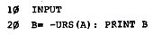
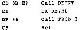
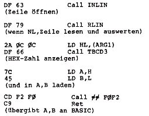

Nascom Journal |
Juni 1981 · Ausgabe 6 |
Nach Einbau der Zusatzschaltung für die Reversdarstellung (Heft 4, 80 S. 8-9) fiel mir ein unangenehmer Effekt auf: Beim Arbeiten mit dem Assembler (Zeap 1.0) stehen, z.B. bei der Eingabe mit dem I-Kommando, hinter den eingegebenen Zeichen lauter „reverse Blanks“. Dies ist wegen der starken Kontrastunterschiede ziemlich hinderlich. Der Mangel läßt sich „beheben“, indem man die Schaltung mit einem zusätzlichen Schalter versieht.
Man legt nun einfach beim Arbeiten im Assembler den Schalter um, da hier die Reversdarstellung nicht benötigt wird.
|
Harald Molle DF7SQ
|
Und wieder haben wir einige dieser unangenehmen Wanzen erwischt.
Im Programm „Reaktionszeitmesser“ aus Heft 2/81 Seite 6/7 sind folgende Fehler zu berichtigen:
Startadresse nicht 0F18 sondern 0E18
In Adr. 0F82 steht „63“. Es muß „62“ heißen.
Im „Sortierprogramm“ aus Heft 5/80 sind folgende Befehle zu ändern:
| 0D28 | falsch | D0 | richtig | DD |
| 0D2E | falsch | 30 | richtig | 3D |
| 0D5A | falsch | 30 | richtig | 3D |
Wird hoffentlich nicht wieder vorkommen!
Dez Hex Umwandlung |
BASIC-Programm:
Maschinenprogramm (NAS-SYS):
Wie arbeitet das Programm?
A ist eine Integer-Dezimalzahl, die das BASIC-Programm anfordert. Das Maschinenprogramm, dessen Startadresse in USRLOC (1004H) eingetragen werden muß, erhält vom Unterprogramm DEINT die Zahl A in HEX-Form. Unterprogramm TBCD3 zeigt den HEX-Wert an.
Dieses BASIC-Programm ist noch kürzer:
10 PRINT USR(A)
A ist eine (beliebige) Dummy-Variable. Maschinenprogramm NAS-SYS):
Nach „RUN“ erscheint in der nächsten Zeile ein blinkender Cursor; jetzt wird die HEX-Zahl eingegeben und die Entertaste betätigt.
Die nächste Zeile bringt dann zuerst die HEX-, dann die entsprechende Dezimalzahl.
Auch hier muß natürlich USRLOC entsprechend der Startadresse geändert werden!
U. Wurditsch
| Seite 8 von 20 |
|---|